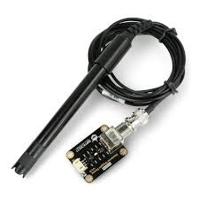
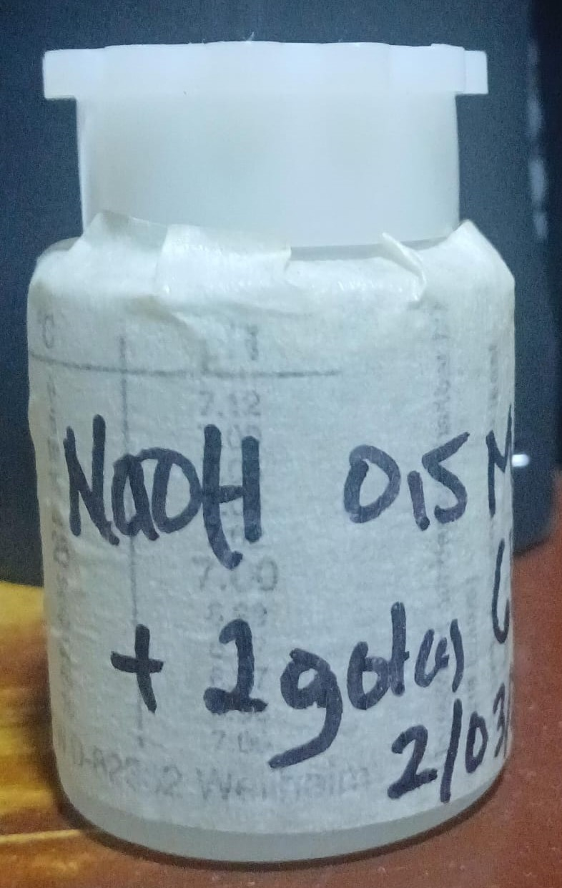
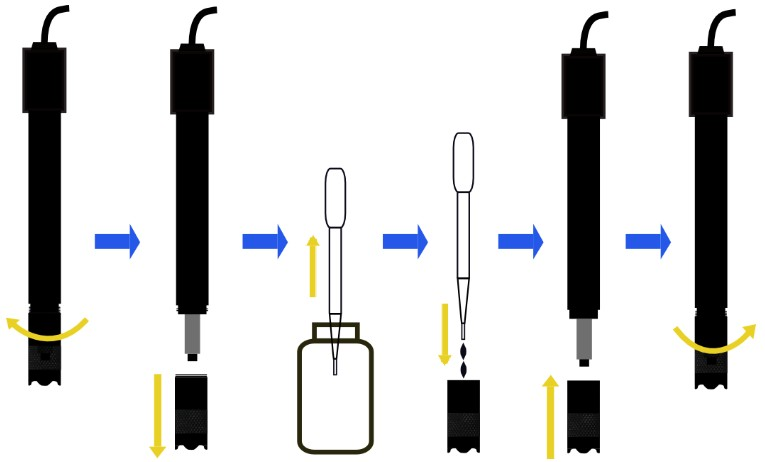
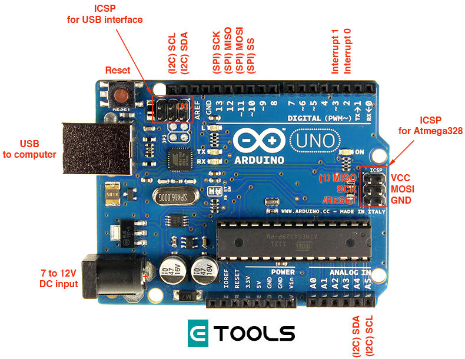
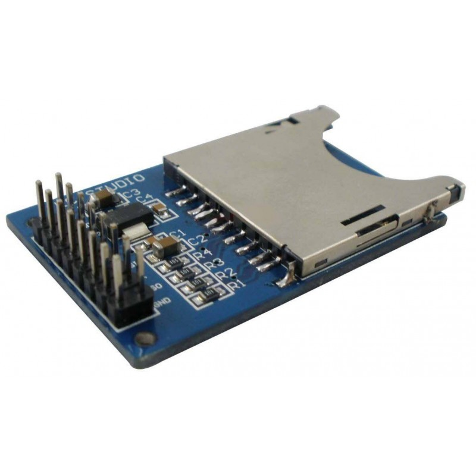

Dispositivos
A continuacion se presentaran los materiales necesarios para tomar los datos del oxigeno disuelto.
SENSOR DE OXIGENO DISUELTO
Para la adquisición de datos se empleara el sensor de oxígeno disuelto SEN0237-A, el cual funciona mediante un principio electroquímico para detectar la concentración de oxígeno presente en el agua.Este módulo incluye una sonda sumergible y una placa de acondicionamiento de señal que permite obtener una salida analógica proporcional al nivel de oxígeno medido.

Para poner en funcionamiento una sonda nueva de oxígeno disuelto, es necesario agregar previamente una solución de hidróxido de sodio (NaOH) 0,5 mol/L en la tapa de la membrana, la cual actúa como solución de llenado. Si la sonda ha estado en uso durante un período prolongado y se observa un aumento considerable en el error de medición, se recomienda reemplazar la solución de llenado siguiendo el procedimiento descrito a continuación.
Procedimiento de llenado
Desenrosque cuidadosamente la tapa de la membrana de la sonda. Llene aproximadamente dos tercios (2/3) del volumen de la tapa con solución de NaOH 0,5 mol/L. Mantenga la sonda en posición vertical respecto al plano horizontal durante todo el procedimiento. Enrosque nuevamente la tapa con cuidado hasta ajustarla completamente. Es normal que una pequeña cantidad de solución se desborde al cerrar la tapa; esto indica que el volumen de llenado es adecuado y que no quedan espacios de aire en el interior.

Recomendaciones importantes
No llene completamente la tapa, ya que podría derramarse una cantidad excesiva de solución al cerrarla. No agregue una cantidad insuficiente de solución, ya que pueden formarse burbujas de aire en el interior, afectando la precisión de las mediciones. La cantidad recomendada es aproximadamente 2/3 del volumen total de la tapa. Limpie cualquier exceso de solución con papel absorbente o tejido limpio. Después de cada uso, cierre correctamente el frasco de solución de NaOH para evitar que el dióxido de carbono (CO₂) del aire altere su composición.
PROCESO DE CALIBRACIÓN
Para garantizar la precisión de las mediciones, el sensor requiere un proceso de calibración previo. Generalmente, se realiza una calibración en aire saturado o utilizando soluciones patrón conocidas. Este procedimiento permite ajustar la relación entre el voltaje de salida y la concentración real de oxígeno disuelto. Una calibración adecuada es fundamental, ya que factores como la temperatura, la presión atmosférica y el envejecimiento de la membrana pueden influir en la medición.

MICROCONTROLADOR DEL SISTEMA
El sistema de adquisición de datos emplea la placa Arduino Uno como unidad principal de procesamiento. Esta plataforma es ampliamente utilizada en aplicaciones de monitoreo debido a su facilidad de programación, estabilidad y compatibilidad con sensores de salida analógica. El Arduino Uno opera a 5 V y cuenta con 6 entradas analógicas, lo que permite la conexión directa del sensor de oxígeno disuelto. Además, incorpora un convertidor analógico-digital (ADC) de 10 bits, capaz de transformar señales analógicas en valores digitales entre 0 y 1023. La placa puede alimentarse mediante conexión USB o a través de una fuente externa de 7-12 V, lo que facilita su implementación en sistemas de monitoreo continuo.

MODULO MICROSD
El módulo MicroSD es un dispositivo electrónico que permite almacenar y leer información en una tarjeta de memoria MicroSD utilizando un microcontrolador como el Arduino.
Este módulo es ampliamente empleado en sistemas de adquisición de datos, ya que facilita el registro continuo de mediciones en archivos digitales, como .txt o .csv,
permitiendo posteriormente su análisis en un computador.
El funcionamiento del módulo se basa en el protocolo de comunicación SPI (Serial Peripheral Interface), mediante el cual el microcontrolador envía y recibe datos
a través de las líneas MOSI, MISO, SCK y CS. El módulo actúa como dispositivo esclavo y el Arduino como maestro, gestionando la escritura y lectura de archivos
dentro de la tarjeta. De esta manera, los datos capturados por los sensores pueden almacenarse de forma organizada y segura para su posterior procesamiento.
